My research maps where drug-related emergencies happen. This internship is where I work with the people who prevent them.
The Center for Alcohol and Drug Resources is a prevention agency in Fair Lawn, New Jersey, and a program of Children’s Aid and Family Services. I emailed the Center many times, got an interview, and started as an intern. Since then I have worked on its youth programs, including NJ4S, New Jersey’s Statewide Student Support Services network, and the annual Seeds of Change Youth Leadership Conference.
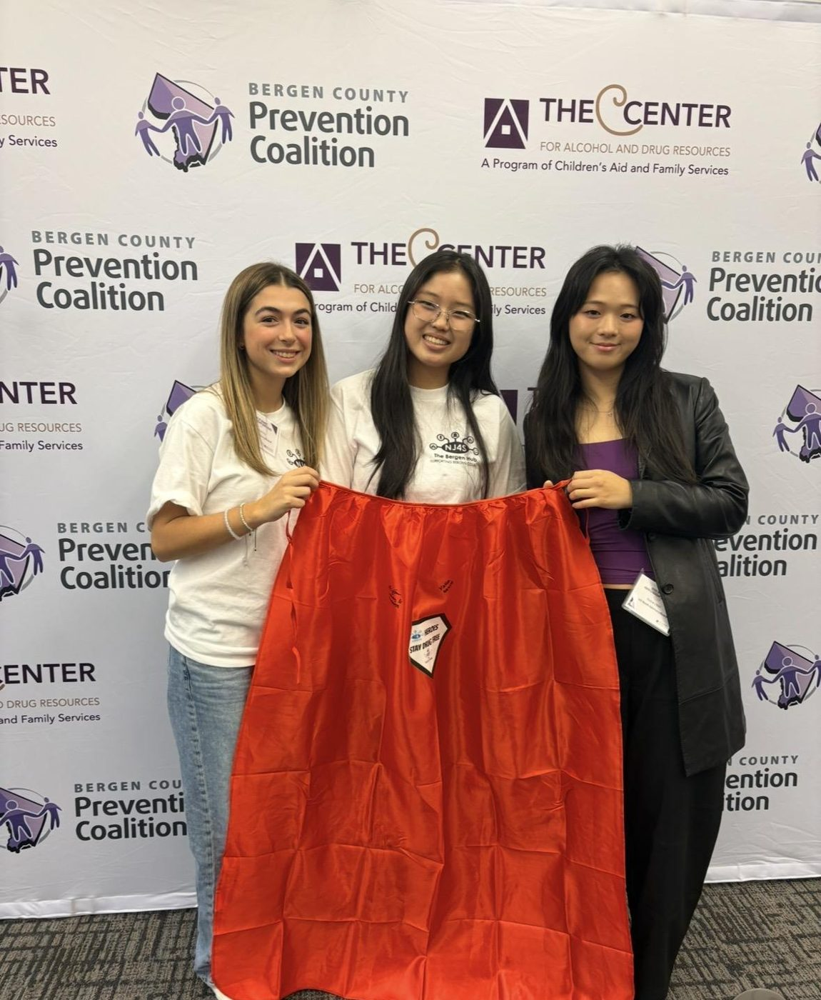
Seeds of Change is The Center’s annual youth conference. The 2026 conference took place on Friday, October 23, at Ramapo College of New Jersey, with funding from the Bergen County Youth Services Commission, and I served on its steering committee.
I designed the conference theme and the flyer that became the cover of the program. At the conference I presented our NJ4S action plan on stage, and I received the Seeds of Change Steering Committee Award.
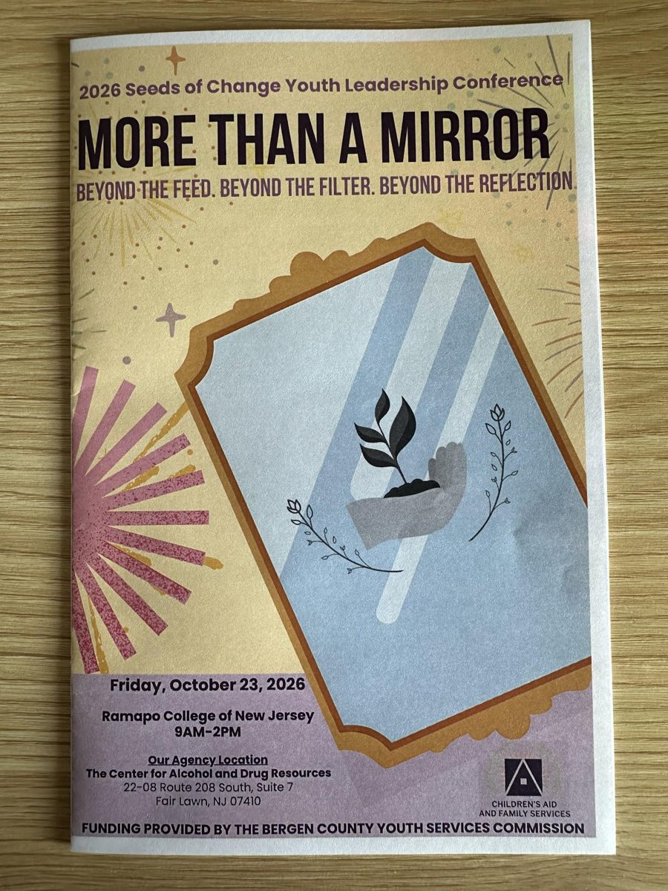
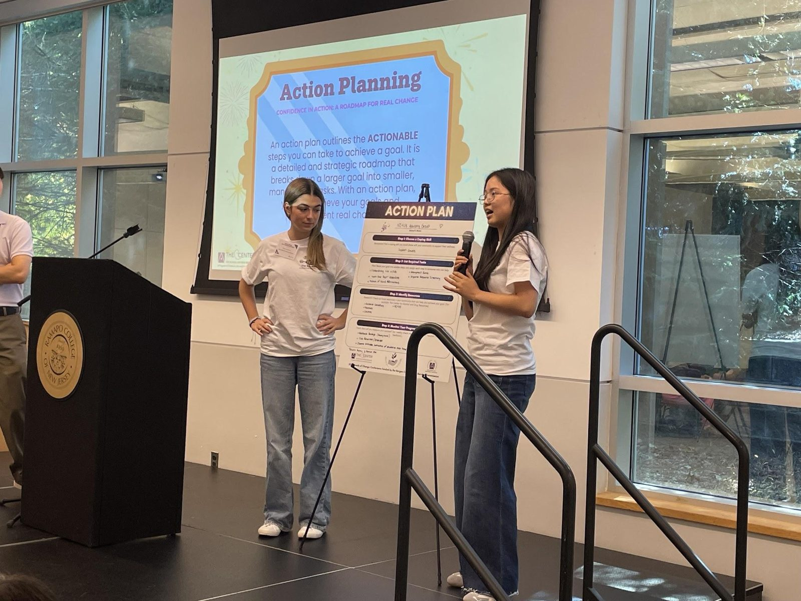
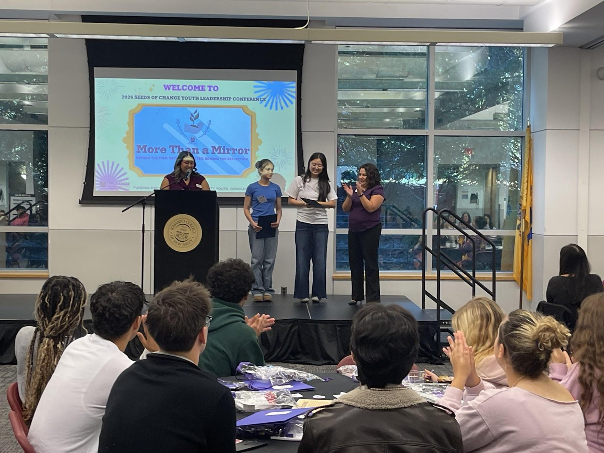
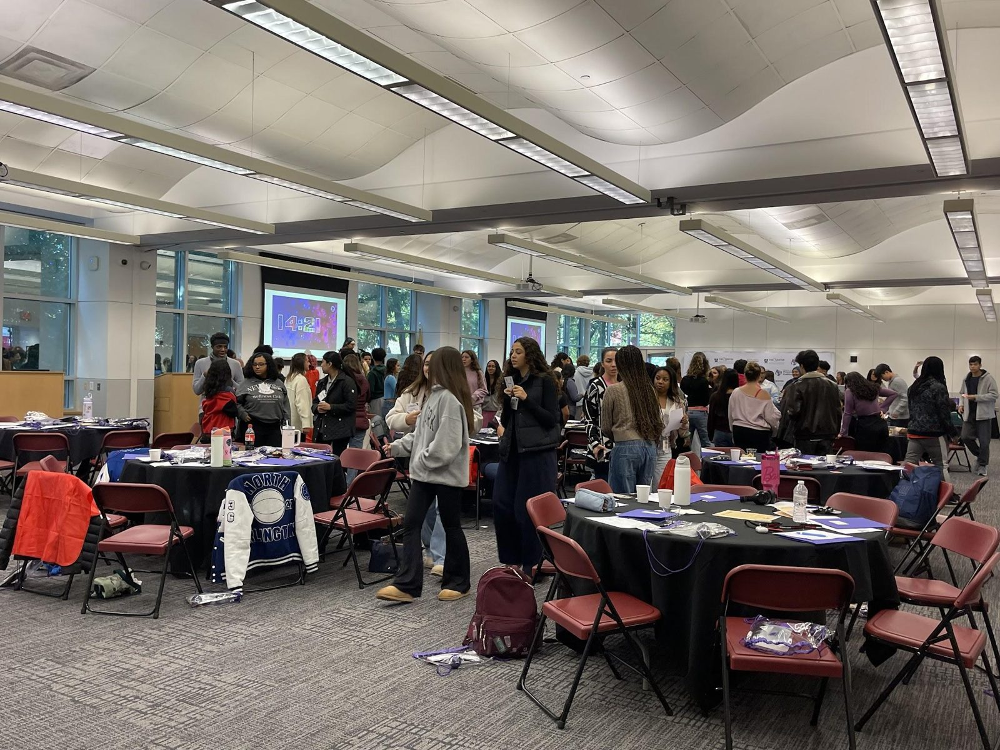
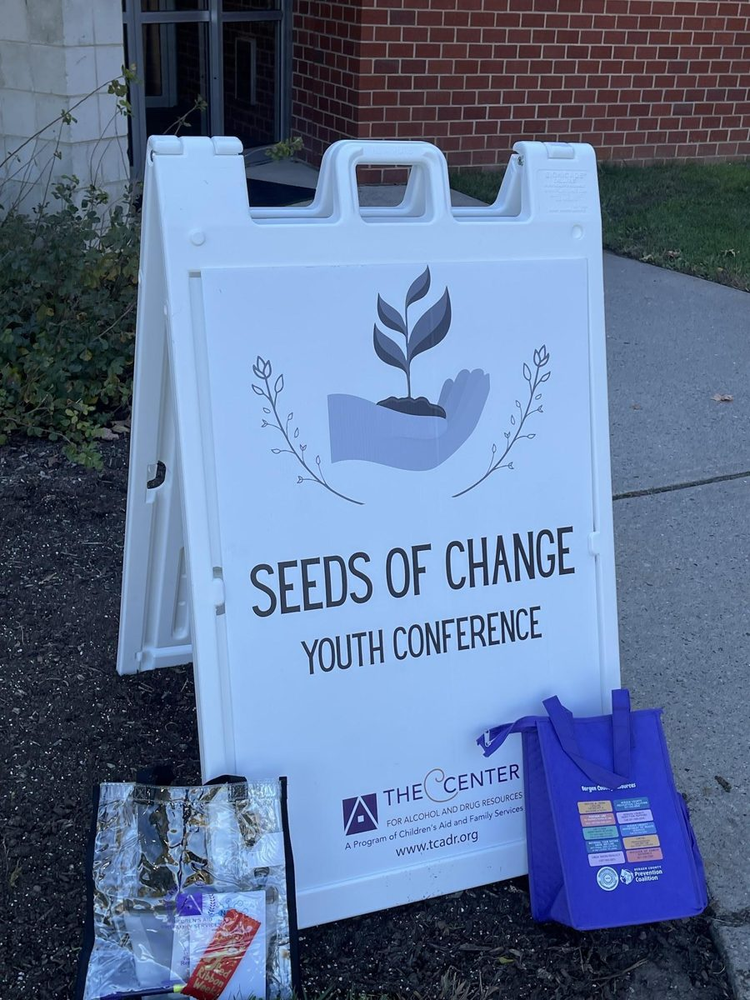
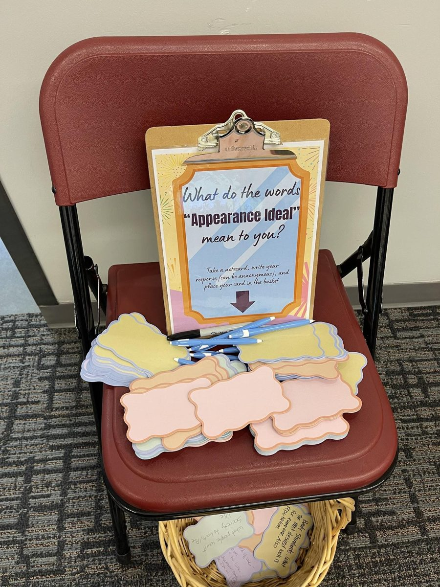
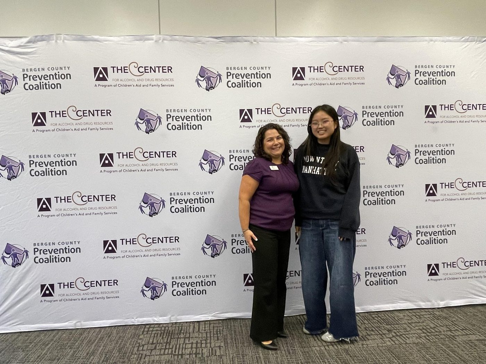
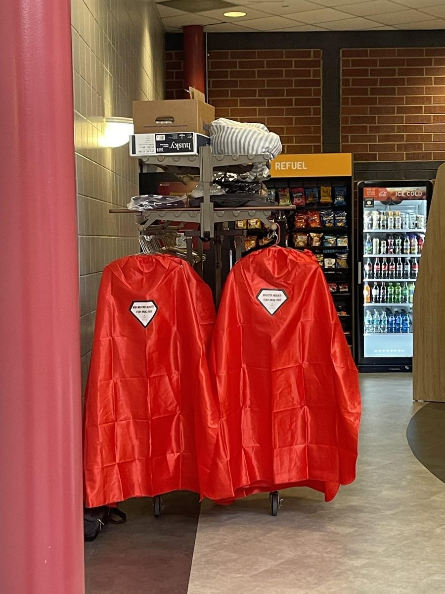
Red Ribbon Week is the national drug-prevention campaign held every October. For the conference, I came up with the Cape of Pledge: red capes that stand for a pledge to prevent substance abuse and promote safety. The Center used my idea at the 2026 Seeds of Change conference, which had more than 100 attendees.
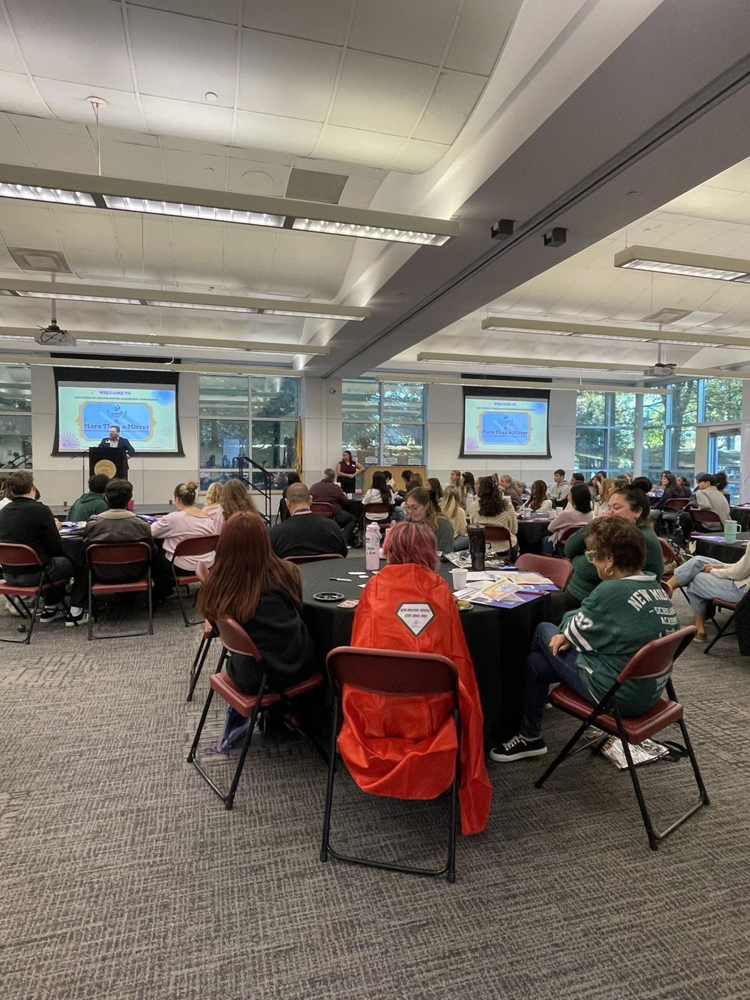
On August 31, 2026, National Overdose Awareness Day, I staffed The Center’s booth on a sidewalk in Englewood with other members of the team. We talked with people who stopped by, shared information about Narcan, and gave out contacts for recovery programs. I also staffed The Center’s booth at National Night Out.
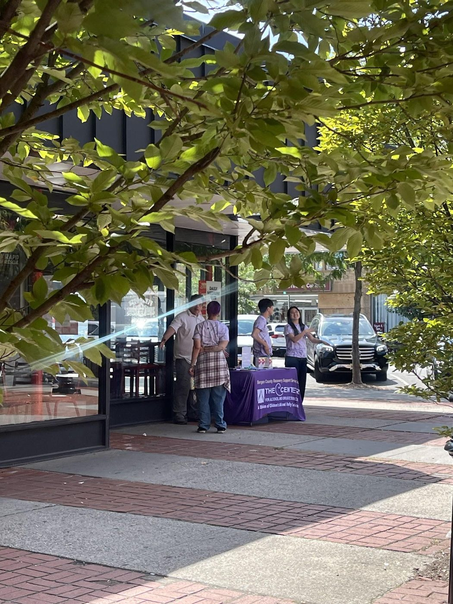
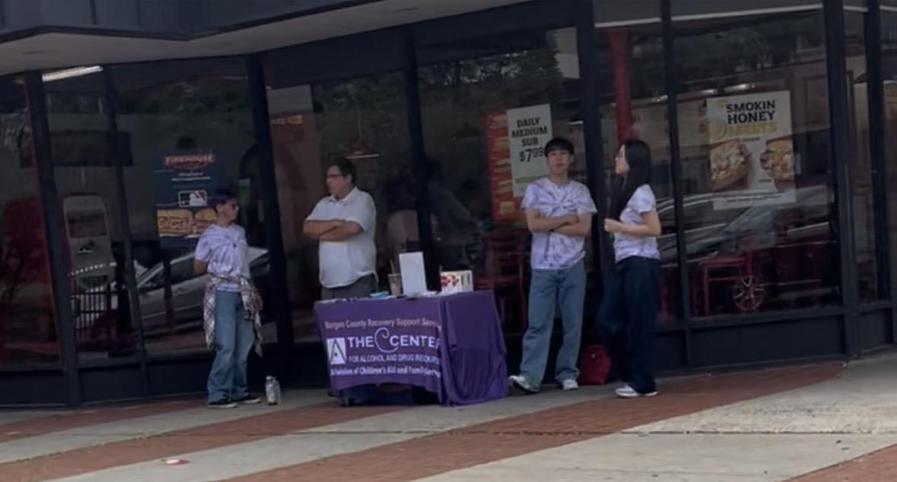